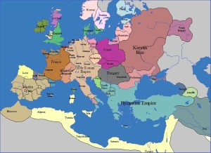
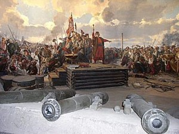

Ukrayna
Günümüz Ukrayna’sında tarihte ilk devleti kuran topluluğun İskitler olduğu kabul ediliyor. MÖ 3. yüzyılda bugünkü Ukrayna topraklarına yerleşerek kendi devletlerini kuran ikinci kavim olan Gotlar, 375 yılında Hunlar karşısında bozguna uğradı.
Hunların egemenliğinin ardından 5. yüzyılın sonlarında Slav kavimleri Ukrayna topraklarına yerleşti. Daha sonra Ukrayna toprakları pek çok Slav kavimine yurt oldu.
Kiev, 882-1132 yılları arasında hüküm süren, Beyaz Rusya, Rusya ve Ukrayna’nın atası sayılan Kiev Knezliği’nin (Kievskaya Rus) başkenti idi.
Prens I.Vladimir, 988 yılında Bizans’tan Hristiyanlığı kabul ederek devlet dini haline getirdi.
12’nci-13’üncü yüzyıllarda Kiev Rusya’sının dağılarak bağımsız prenslikler haline gelmesiyle, bugünkü Ukrayna’nın toprakları Moskova ve Belarus’un hakimiyeti altına girdi.
Daha sonra Ukrayna tarihinde Galiçya-Volınya Prensliği, egemen bir devlet olarak ortaya çıktı. secYüzyıllar boyunca Litvanya ve Polonya ile bağımsızlık mücadelesi veren Ukrayna, Bogdan Hmelnitski’nin önderliğinde Kazakların Lehistan’a karşı başlattığı büyük ayaklanmanın sonucunda, 16’ıncı ve 18’inci yüzyıllar arasında Avrupa haritasında, askeri ve idari yönetimler topluluğu olan Zaporojye Seçi olarak yeniden yerini aldı.
1672-1676 Osmanlı-Lehistan Savaşları sonucunda, Ukrayna’nın güneybatı ve orta batısını kapsayan tarihi Podolya bölgesinde Osmanlı Devleti egemenliğinde Podolya Eyaleti kuruldu.
1676-1681 Osmanlı-Rus Savaşı sonunda Osmanlı İmparatorluğu ile Kırım Hanlığı ve Rusya Çarlığı arasında Kırım’da Bahçesaray Anlaşması imzalandı. 20 yıllığına geçerli olması kabul edilen anlaşmaya göre, Ukrayna’dan geçen Dnyepr Nehri, Rus Çarlığı ile Osmanlı İmparatorluğu arasında sınır olarak belirlendi. Bunun sonucunda Zaporojye Osmanlı egemenliğine girdi. Bölgede Osmanlı egemenliği 1699 Karlofça Anlaşması’na kadar sürdü.
Uzun yıllar Rusya, Polonya, ardından da Avustuya-Macaristan’ın himayesi altında olan Ukrayna toprakları, I. Dünya Savaşı sırasında Rusya ve Avusturya-Macaristan İmparatorluğu’nun çarpışmalarına sahne oldu.
1917 Sosyalist Ekim Devrimi’nin ardından, Ukrayna Sovyet Sosyalist Cumhuriyeti, Sosvyet Sosyalist Cumhuriyetler Birliği (SSCB) içinde yerini aldı.
II. Dünya Savaşı sırasında Ukrayna topraklarının neredeyse tamamı Nazi Almanyası tarafından işgal edildi. Nazi katliamları Ukrayna’da en şiddetli şekilde kendini gösterdi. Savaş boyunca ülkede partizan savaşları boy gösterdi. Ukrayna 1944 yılında Nazi işgalinden kurtarıldı. Savaşta 5 milyon Ukraynalı hayatını kaybetti. Ülkede 700 şehir ve 28 bin köy harap oldu.
Ukrayna Sosyalist Cumhuriyeti’ne 1945 yılında Zakarpatya, 1954’de Kırım dahil oldu.
Ukrayna 1986 yılında, tarihin en büyük nükleer felaketlerinden biri olan Çernobil faciasını yaşadı.
Sovyetler Birliği’nde 1990’lara gelinirken “yeniden yapılanma” adı altında yaşanan çözülme sürecinde, tüm diğer eski Sovyet ülkelerinde olduğu gibi Ukrayna’da da milliyetçi dalga yükelişe geçti.